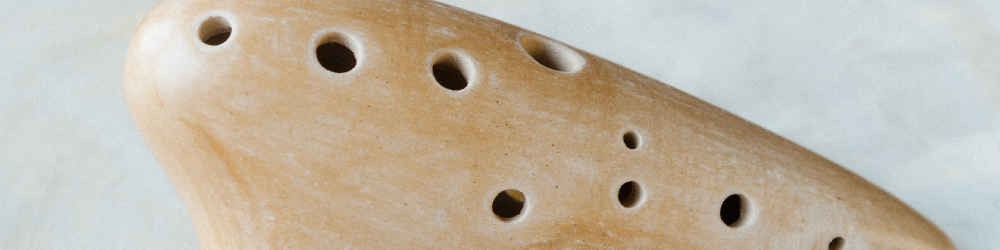
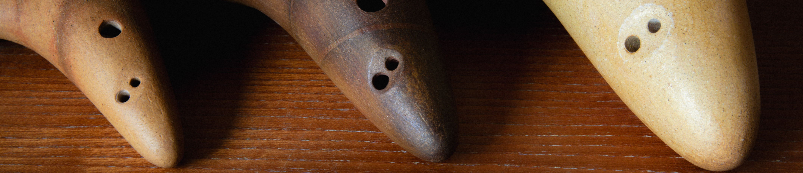

「シングル管は音域が狭いから、演奏できる曲が少ない。少なくとも12穴じゃないと。とりあえずAC管。」そう思っていませんか？あなたが奏でたい音楽にとって、本当にそれが正解ですか？
12穴の音域を11穴で実現
オカリナは19世紀のイタリアで作られました。ヨーロッパで典型とされてきたのは、10穴でドから１オクターブ上のファまで出すことができるものです。高さの異なるC管とG管を複数人で吹き分けることで音域をカバーします。
20世紀の日本では、12穴で低いシと低いラまで下がることができるオカリナが作られました。基本的には開放しておき、必要な時だけ塞ぐサブホールが追加され、より低い音を獲得しています。現在では、この12穴式オカリナは世界的に非常にポピュラーなものとなっています。

この下がれるサブホールをひとつ残し、全ての穴を開けた状態の音（開放音）を高くしました。11ホールで、低いシとドから１オクターブ上のソまで出すことができます。高音域の一部のみ独自の運指を使いますが、ほとんどの部分は一般的な運指と同じです。
これにより、速いテンポの曲でもスムーズな指運びが可能になります。上に余裕を作ることで、従来のオカリナで開放音だった高いファを小指を塞いだまま出すことができます。高いミと高いファの行き来もやりやすくなり、安定して本体を支えることができます。
オカリナにもダブルホールを。
右小指の音孔が二股に分かれており、ド♯を出すことができます。これはリコーダーのダブルホールと同じものです。ヨーロッパの一部のオカリナで見られる機構ですが、日本のオカリナではほとんど取り入れられてきませんでした。
なぜなら、サブホールが同じ役目を担えるからです。12穴式のC管の場合、右手のサブホールを塞ぎ、右小指のみを開けることで同じド♯を出すことができます。ゆっくりした曲では問題ありませんが、テンポの速い曲でリズミカルな演奏をしたい場合には、右小指のダブルホールを使った方が演奏しやすいです。

多様な調性から本当に必要なものを選ぶ。
定番のC・F・G管だけでなく、Ab、A、Bb、D、Eb管も制作できます。複音管を行き来せず、軽く小さなシングル管で演奏してみませんか？
特に、イーリアン・パイプスやティン・ホイッスルで演奏するような曲をオカリナで吹きたい、あるいは、それらの楽器に併せて吹きたい、という方がもしこのページをご覧になっていたら、ぜひご連絡ください。ド♯が出せるサブホールを備え、レから1オクターブ上のラまで出すことができ、速弾きもしやすいシングル管をご用意しています。
私がオカリナを始めたきっかけは、スペインのガイタ奏者カルロス・ヌニェス氏です。それまでオカリナに特別な興味はありませんでしたが、ヌニェス氏のオカリナ演奏を聞いて、オカリナという楽器に対して抱いていた印象が大きく変わりました。
ヌニェス氏が使用しているのは、スペインの彫刻家マヌエル・バレイロ(パパローロ)氏のオカリナです。私は2014年頃からパパローロと懇意になり、様々なことを教わりました。
演奏を制限しない吹奏感
「オカリナは優しい息で誰でも簡単に鳴らせる楽器」とよく語られます。しかし、「鳴りやすさ」を優先し過ぎると、正しい音程が出る息の吹き込み方が限定されてしまいます。さらに、「高音は強く速く吹き込み、低音は弱く優しく吹く」という通念にも長年疑問を持ってきました。
師匠であるパパローロのオカリナで最も好きな点は「懐が深い」ところです。低音から高音まで、どんなふうに息を吹き込めば良いか、ある程度の自由があり奏者に委ねてくれます。パパローロのオカリナから一番しっかり引き継ぎたいと考えている部分です。楽器が奏者の表現を許容できるようにすることが理想です。繊細な高音は伸びやかに、力強く響かせたい低音はしっかりと吹くこともできます。
高音はかすれてはいけないのか
「高音はかすれずキレイに鳴ります。」これも、オカリナの商品説明で非常によく見かける言葉です。そういった音色を好まれる方には、私のオカリナの音色は「かすれている」「ハスキー」と感じられるかもしれません。しかし、ぜひ一度、実際の音を聞いていただきたいです。
音色のためのウィンドウェイ
ウィンドウェイの出口はホイッスルのような形をしています。これも、パパローロから受け継いで、自分なりに改良を加えています。エッジにどう空気が当たるか、最も時間をかけて成型している部分です。

長く使えるように
内側は素地、外表面は釉薬のみで仕上げています。絵の具・ニスなどの塗料やコーティング剤は使用していません。食器と同じように扱っていただけます。

水に浸けて洗っても、寒い日は温めても大丈夫です。